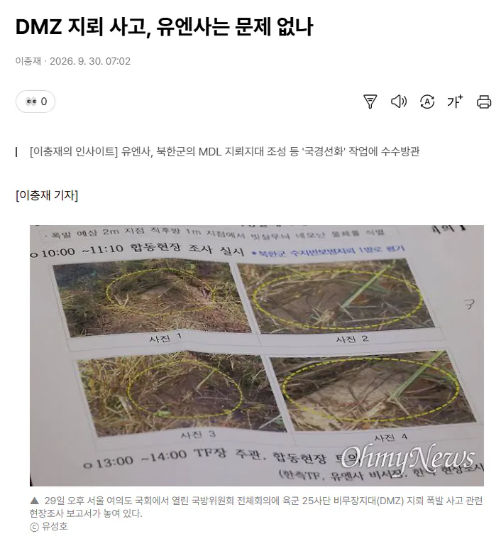

음?

음?
역시 오마이뉴스 투명하구나 ㅋㅋㅋㅋ
어딨나 했는데 워터마크가 박혀있었군ㅋㅋㅋ
제목학원 다닌 짬바 진짜 ㅋㅋ

어그로 제목인줄 알았는데 이왜진 ㅋㅋ
이거 샤를유튜브에 나온 군사기자 이야기 들어보면 딱히 틀린말 아님 ㅋㅋㅋ
유엔군< 평화유지가 목적 < 북한이 지뢰를 심는다 공격의도없다< 이런 레파토리라고 함 ㅋㅋ
유엔사는 어디까지나 대한민국이 폭주해서 북한 공격할까봐 두려운 거임. 유엔 기준으로는 북한이 괴뢰가 아니라 독립국이니까. 쟤네는 잘잘못 따지는 걸 떠나서 무슨 교통법의 우자원칙 같이 보는 거임. 별 븅신같은 새끼들.
여윽시 그
하지만 유엔사는 "중화기를 들여오는 게 아니기 때문에 정전협정 위반에 해당되지 않는다"며 거부했습니다. 북한의 국경선화 작업은 방어적 성격의 목적이 큰 만큼, 군 사적 위협에 해당하는 사안이 아니기 때문 에 정전협정 위반에 준하는 행위로 단정하기 어렵다는 취지입니다.
...우리 입장에서 문제 맞는거 같은데?
신문사랑 링크 쳐 달아라
윗 댓글들만 보면 진짜 문제 잇는거 아냐?
???: 그럴리가 없습니다
이 모든건 좌파 빨갱이 정부가 대한민국을 북한에 넘기려고 하기 때문인것입니다
이제껏 있었던 북한의 수많은 정전협정 위반에 대한 유엔사의 반응이 사실은 지금과 별다를것 없이 같았다는것은 잘 모르겠고
무조건 좌파 빨갱이정부 탓이어야 한단 말입니다
욕하기전에 기사를 좀 찾아서 읽어 얘들아....
퍼온 렉카새끼도 기사 본문 내용이 제일 중요한데 그건 쏙 빼놓고 제목만 달랑 들고오네? 거기다 링크도 없네? ㅋㅋㅋㅋ
의도가 존나게 투명하쥬?
그래놓고 음? 이지랄 ㅋㅋㅋㅋ
유엔사도 책임있는거 맞음
우리가 유엔사에 항의하니까
저거 방어선이잔슴~하고 아닥하고 넘어감
확실한건 이 작성자 기사 안읽은건 100%임 ㅋㅋ
정훈장교님 고생하십니다
유엔사가 전작권 환수 후에도 합참에 대한 통제권을 유지하기 위해서 겐세이를 많이 넣는다는 뉘앙스의 글인데 이게 진짜 그런지 아닌지 알 수가 없네.
뭐래는거야